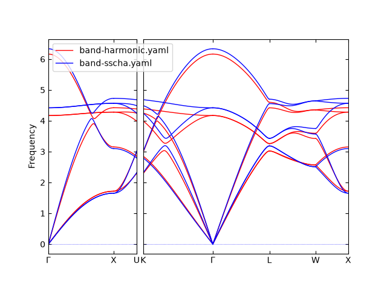

Temperature dependent force constants using pypolymlp and symfc#
Warning
This is an experimental feature. The command-line options of
phonopy-mlpsscha, the layout of mlpsscha.hdf5, and the phonopy.sscha API
may change in a backward-incompatible way between releases, without a
deprecation period.
Force constants that depend on temperature are computed here within the stochastic self-consistent harmonic approximation (SSCHA). They are determined self-consistently from supercells whose atoms are displaced randomly, the displacements being drawn from the canonical ensemble of the force constants themselves at the temperature. About SSCHA, please refer to the papers by L. Monacelli et al., J. Phys.: Condens. Matter 33 363001 (2021) and A. van Roekeghem et al., Comput. Phys. Commun. 263 107945 (2021). Technically, the computational procedure introduced here is equivalent to the approach of the latter paper.
Every iteration needs the forces of many supercells, which makes a direct first-principles calculation expensive. Two codes make it affordable. The polynomial machine learning potential (MLP) code pypolymlp is trained once on a dataset of supercell displacements, forces and energies, and then evaluates the forces of the sampled supercells in place of the calculator. symfc, a dependency of phonopy that is installed together with it, fits the force constants to those displacements and forces using a symmetry-adapted basis.
phonopy-mlpsscha runs the iterations at one temperature and writes what every
one of them sampled to mlpsscha.hdf5. One call is one temperature. How many
of the iterations to average over is chosen afterwards, from that file.
For further details on combining phonopy calculations with pypolymlp, refer to A. Togo and A. Seko, J. Chem. Phys. 160, 211001 (2024) [doi] [arxiv].
The example on this page is KCl in the rocksalt structure, and its goal is to reproduce with a polynomial MLP the SSCHA force constants of A. Togo et al., J. Phys.: Condens. Matter 34, 365401 (2022) [doi] (open access). Those force constants were computed with the calculator itself at every iteration, and the MLP takes its place here.
Requirements#
pypolymlp >= 0.21.3
For linux (x86-64), a compiled package of pypolymlp can be installed via conda-forge (recommended). Otherwise, pypolymlp can be installed from source-code.
symfc and h5py are dependencies of phonopy and are installed together with it.
Overview#
The KCl of the example is computed with VASP on a 2x2x2 supercell of its conventional unit cell, which is the supercell of the 2022 paper.
The calculation has five steps.
Compute the harmonic force constants by the finite displacement method.
Draw supercells from the thermal distribution those force constants define, at several temperatures, and compute their forces and energies with the calculator.
Train the MLP on that dataset, which writes
polymlp.yaml.Run
phonopy-mlpsscha, which writesmlpsscha.hdf5.Read the run: choose how many leading iterations to leave out, and average the rest.
Steps 1 and 2 call the calculator and are the expensive part. Steps 3 to 5 read what those two wrote.
The numbered scripts on this page are meant to be saved under the names their
captions give, script1.py and so on, and to be run from the directory that
holds the phonopy_params.yaml of step 1. Each of them is complete as it
stands, and the settings each one takes are the capitalized names at its top.
flowchart TD
FD["small displacements"]
FD --> FC(["harmonic<br/>force constants"])
FC --> TD["thermal displacements<br/>at several temperatures"]
TD --> CALC{{"calculator forces"}}
CALC --> TR(["training set"])
TR --> DEV["train the MLP"]
DEV --> MLP(["polymlp.yaml"])
MLP --> SSCHA["phonopy-mlpsscha"]
FC --> SSCHA
SSCHA --> RUN(["mlpsscha.hdf5"])
The harmonic force constants are used twice. The thermal distribution of step 2 is the one they define, and the SSCHA iterations of step 4 start from them.
1. Harmonic force constants#
The NAC parameters#
KCl is polar, so the non-analytical term correction has to be there. The Born
effective charges and the dielectric constant come from a separate calculation
on the primitive cell, LEPSILON = .TRUE. in VASP, and are written as a BORN
file:
14.399652
2.364629719999998 0 0 0 2.364629719999998 0 0 0 2.364629719999998
1.128900873333334 0 0 0 1.128900873333333 0 0 0 1.128900873333334
-1.128900873333334 0 0 0 -1.128900873333333 0 0 0 -1.128900873333334
The first line is the unit conversion factor, the second the dielectric constant, and the last two the Born effective charges of the K and the Cl atom of the primitive cell.
Write that file before the commands below, and the parameters travel with the
cell through the whole calculation. phonopy-init reads BORN from the
directory it runs in and writes a nac block into phonopy_disp.yaml,
phonopy-collect --save-params carries the block into phonopy_params.yaml,
and the scripts of step 2 carry it into every file they save, merged.yaml
included. Writing BORN afterwards leaves the files already saved without it.
The other way is to paste the block into a phonopy.yaml-like file that lacks
it, at the top level beside dataset:
nac:
born_effective_charge:
- # 1 (K)
- [ 1.128900873333334, -0.000000000000000, 0.000000000000000 ]
- [ 0.000000000000000, 1.128900873333333, -0.000000000000000 ]
- [ 0.000000000000000, 0.000000000000000, 1.128900873333334 ]
- # 2 (Cl)
- [ -1.128900873333334, 0.000000000000000, -0.000000000000000 ]
- [ -0.000000000000000, -1.128900873333333, 0.000000000000000 ]
- [ 0.000000000000000, -0.000000000000000, -1.128900873333334 ]
dielectric_constant:
- [ 2.364629719999998, 0.000000000000000, 0.000000000000000 ]
- [ 0.000000000000000, 2.364629719999998, 0.000000000000000 ]
- [ 0.000000000000000, 0.000000000000000, 2.364629719999998 ]
unit_conversion_factor: 14.399652
Either way the log names the file the parameters came from, as
NAC parameters were read from "BORN". or from the phonopy.yaml-like file that
carried them. phonopy-mlpsscha -v adds NAC parameters are not used. when
there are none.
The iterations do not use these parameters. Their displacements are drawn from
the force constants at the commensurate points of the supercell, where no
correction is applied, so drawing with and without the BORN file above gives
the same supercells, and the force constants that come out are the same.
The free energy is another matter. Its harmonic part is sampled on a mesh, where the correction does apply, and for this KCl at 300 K the parameters above move it by 0.43 meV per primitive cell. That is several times the statistical error of one iteration, so a free energy that is to be compared with anything needs them. The band structures of step 5 need them as well, for the LO-TO splitting.
A rerun with the same --random-seed draws the same supercells, so adding the
BORN file to a run that was made without it changes the harmonic part alone.
The finite displacements#
phonopy-init writes the displaced supercells, the calculator computes their
forces, and phonopy-collect puts the two together:
% phonopy-init -c POSCAR-unitcell -d --dim 2 2 2 --amplitude 0.03
% # run the calculator in disp-001 and disp-002
% phonopy-collect disp-*/vaspout.h5 --save-params
# -> phonopy_params.yaml
POSCAR-unitcell is the conventional cell of KCl, with a = 6.292 Angstrom, and
--dim 2 2 2 makes the supercell of 64 atoms. Fm-3m leaves two displacements,
one on a K atom and one on a Cl atom, each 0.03 Angstrom.
The VASP settings of this example are PBEsol, ENCUT = 500, EDIFF = 1e-8,
ISMEAR = 0 with SIGMA = 0.01, ISYM = 0, PREC = accurate and
ADDGRID = .TRUE., on a 2x2x2 k-point mesh of the supercell. The SSCHA
iterations take their forces from the MLP rather than from VASP, and the MLP is
fitted to VASP forces, so these settings are what it can reproduce.
phonopy_params.yaml then carries the cell, the displacements and the forces.
Script 1 of step 2 fits the harmonic force constants from it, and
phonopy-mlpsscha starts its iterations from them.
2. The training set#
The displacements of step 1 are small, and the forces they give are almost harmonic. Anharmonic effects appear only in supercells displaced further than that. The training set is therefore made by moving every atom at once, by amounts drawn at random from the thermal distribution of the harmonic crystal at a chosen temperature.
The harmonic force constants define that crystal. It separates into independent normal modes. Each mode is a harmonic oscillator, so its own normal coordinate is Gaussian about zero, and the width of that Gaussian is set by the mode’s frequency and by the temperature.
The distribution is drawn once, from the harmonic force constants. SSCHA iterates its own distribution to self-consistency with the anharmonic force constants; this draw does not. In practice that has been enough for a training set.
The thermal distribution#
Each mode \((\mathbf{q}, \nu)\) of the supercell is a harmonic oscillator in equilibrium at \(T\), so its normal coordinate is normally distributed about zero with variance
A snapshot is one supercell with every atom displaced at once, unlike the displacements of step 1, which move one atom at a time. Each snapshot draws one \(\xi_{\mathbf{q}\nu}\) per mode from the standard normal distribution – mean 0, variance 1 – so that \(Q_{\mathbf{q}\nu} = \sigma_{\mathbf{q}\nu} \xi_{\mathbf{q}\nu}\), and the displacements follow from the eigenvectors,
The frequencies set the amplitudes \(\sigma_{\mathbf{q}\nu}\), and the eigenvectors set the pattern of atomic motion each mode displaces along. Each \(\xi_{\mathbf{q}\nu}\) fixes how far its own mode is displaced in this snapshot, and the sum turns those into the displacement of every atom.
Drawing the displacements#
Pick temperatures covering the temperatures the SSCHA runs will use. An MLP tends to be poor outside the range it was trained on. Script 1 draws at 0, 100, 300 and 500 K, which covers a run at any temperature up to 500 K.
Script 1 reads the harmonic force constants of step 1 from
phonopy_params.yaml, draws SNAPSHOTS supercells at each temperature, and
writes them in the layout phonopy-collect reads back.
"""Draw the training supercells from the thermal distribution."""
from pathlib import Path
import phonopy
from phonopy.interface.vasp import write_vasp
PHONOPY_PARAMS = "phonopy_params.yaml" # harmonic force constants of step 1
TRAIN = Path("train")
TEMPERATURES = (0.0, 100.0, 300.0, 500.0) # K
SNAPSHOTS = 50 # structures per temperature
SEED = 20260907
for temperature in TEMPERATURES:
phonon = phonopy.load(PHONOPY_PARAMS, log_level=0)
phonon.init_random_displacements()
rd = phonon.random_displacements
rd.run(
temperature,
number_of_snapshots=SNAPSHOTS,
random_seed=SEED + int(temperature),
)
phonon.dataset = {"displacements": rd.u.copy()}
set_dir = TRAIN / f"T{int(temperature)}"
set_dir.mkdir(parents=True, exist_ok=True)
# The displacements have to be saved beside the supercells: phonopy-collect
# attaches the forces to them below.
phonon.save(set_dir / "phonopy_disp.yaml")
for i, cell in enumerate(phonon.supercells_with_displacements, 1):
disp_dir = set_dir / f"disp-{i:03d}"
disp_dir.mkdir(exist_ok=True)
write_vasp(disp_dir / "POSCAR", cell)
phonopy.load fits the force constants to the displacements and forces the
file carries, and init_random_displacements needs them.
Each set has its own directory, train/T0 to train/T500, holding
phonopy_disp.yaml and disp-001/POSCAR .. disp-050/POSCAR, the same layout
as the finite displacement calculation of step 1. Run the calculator in every
disp-*, then collect the forces of each set:
% phonopy-collect disp-*/vaspout.h5 --save-params
# -> phonopy_params.yaml, with the displacements, forces and supercell energies
phonopy-collect takes the calculator output files as its arguments, and reads
the displacements and the calculator from the phonopy_disp.yaml of the
directory it runs in. Run it in each set directory in turn.
--save-params writes phonopy_params.yaml; without it the command writes
FORCE_SETS, which carries no supercell energies. The SSCHA free energy needs
those energies, and extracting them from the calculator output is supported for
the VASP interface alone.
Script 1 draws 50 supercells at each of the four temperatures, so the
calculator runs 200 supercells of 64 atoms here. Collecting each set in turn
leaves one phonopy_params.yaml in train/T0, train/T100, train/T300 and
train/T500.
Merging the temperatures#
The MLP is trained on all four temperatures at once. Script 2 merges the sets by interleaving, so that the temperatures alternate through the merged list instead of following one another in blocks.
The reason is how ntrain and ntest cut the merged list. ntrain takes that
many structures from its head and ntest takes that many from its tail, and
neither looks at what is in them. In blocks the head would be the coldest
temperatures and the tail the hottest, so the MLP would be fitted to one part
of the range and tested on another. Interleaved, any head and any tail hold the
temperatures in equal parts.
"""Merge the sets of the temperatures into one training set."""
from pathlib import Path
import numpy as np
import phonopy
TRAIN = Path("train")
TEMPERATURES = (0, 100, 300, 500) # the temperatures of Script 1
values = {"displacements": [], "forces": [], "supercell_energies": []}
for t in TEMPERATURES:
ph = phonopy.load(
TRAIN / f"T{t}" / "phonopy_params.yaml", produce_fc=False, log_level=0
)
for key in values:
values[key].append(ph.dataset[key])
merged = {}
for key in values:
# (temperature, structure, ...) -> (structure x temperature, ...)
merged[key] = np.concatenate(np.swapaxes(values[key], 0, 1))
phonon = ph.replicate()
phonon.nac_params = ph.nac_params
phonon.dataset = merged
phonon.save(TRAIN / "merged.yaml")
train/merged.yaml then holds the 200 structures with their displacements,
forces and supercell energies, and is the file the MLP is trained on.
Checking the training displacements is a second of arithmetic on what Scripts 1 and 2 wrote, and the check on the displacements can be made before the calculator is run.
What the draw leaves at its defaults#
Script 1 leaves the other parameters of init_random_displacements at their
defaults. The parameters that change the displacements are
cutoff_frequency, dist_func and max_distance.
cutoff_frequency is 0.01 THz by default. A mode’s amplitude grows without
bound as its \(|\omega|\) goes to zero, so the draw leaves out every mode
below the cutoff. The acoustic modes at \(\Gamma\) fall below it in any
calculation, and a crystal close to an instability can have others that do.
The draw takes \(|\omega|\), so an imaginary mode is drawn as a real mode
of the same magnitude. Look at the frequencies of step 1 before training on a
structure that has them. RandomDisplacements.treat_imaginary_modes is the
explicit treatment. It takes \(|\omega|\) at the commensurate points,
shifts the modes between freq_from and freq_to up by freq_shift, and
rebuilds the force constants from the shifted modes.
dist_func chooses the occupation the draw uses, quantum by default or
classical. max_distance shortens any displacement longer than the length
given, which caps the tail of the distribution.
Reproducing and extending the draw#
Snapshot i is drawn from SeedSequence([random_seed, i]), so it depends on
its index and on nothing else. Asking for snapshots 0 to 49 and later for 50 to
99 gives the same 100 as asking for 0 to 99 at once. A training set can
therefore be extended, or generated in blocks, with
run(..., first_snapshot=N).
A seed alone does not reproduce a training set after a NumPy upgrade. NumPy
does not promise that Generator distribution methods give the same stream
across its own versions
(NEP 19). Save the
\(\xi\) themselves to keep the draw across such an upgrade.
draw_standard_normals returns them rather than displacements, and
run(standard_normals=...) takes a set back. In place of the rd.run call of
Script 1,
normals = rd.draw_standard_normals(SNAPSHOTS, random_seed=SEED + int(temperature))
np.savez_compressed(
TRAIN / f"normals-{int(temperature)}K.npz", ii=normals[0], ij=normals[1]
)
rd.run(temperature, standard_normals=normals)
The displacements in each phonopy_disp.yaml record the training set that was
run, and the forces attach to those, so a lost normals.npz costs the
extension rather than the training set.
The displacements are drawn at random, so a training set of a given size is one draw among many. A second draw of the same size would give a different training set, and with it a different MLP and different results downstream. Draw a second set with a different seed and train a second MLP on it to measure that difference, and compare the quantity you intend to report rather than the phonon frequencies alone.
3. Training the MLP#
phonopy --pypolymlp trains the MLP on the merged set and writes it as
polymlp.yaml in the current directory. The name cannot be changed from the
command line, so run the training in the directory the MLP belongs to:
% mkdir mlp-default && cd mlp-default
% phonopy ../train/merged.yaml --pypolymlp --mlp-params="ntrain=184, ntest=16" -v
# -> mlp-default/polymlp.yaml
ntrain=184, ntest=16 splits the 200 structures of step 2. The MLP this gives
predicts the 16 test structures with a force RMSE of 0.00054 eV/Angstrom and an
energy RMSE of 0.0083 meV/atom, and pypolymlp selects the smallest penalty of
its ladder, 1e-3.
A directory per MLP is what makes several descriptors comparable, since each
fit writes polymlp.yaml into the directory it runs in and would otherwise
write over the previous one.
Information about the development of MLPs using pypolymlp is provided between
the pypolymlp start and pypolymlp end sections of the log. The -v option
shows the prediction errors of the developed MLPs. Those reported for the test
dataset are the errors for the structures that were not used for the training,
and therefore indicate how accurately the MLPs predict energies and forces of
unseen supercells.
The parameters of the MLP#
A few parameters can be specified using the --mlp-params option for the
development of MLPs. The parameters are provided as a string, separated by
commas. A brief explanation of the available parameters can be found in the
docstring of PypolymlpParams:
In [1]: from phonopy.interface.pypolymlp import PypolymlpParams
In [2]: help(PypolymlpParams)
ntrain and ntest are implemented in phonopy, while the remaining parameters
are directly passed to pypolymlp. The dataset split is a straightforward one:
the first ntrain supercells of the merged list are used for training, and the
last ntest supercells are reserved for testing.
Optimizing pypolymlp parameters can be difficult, both in terms of achieving accuracy and managing the computational resources required. The current default parameters are likely suitable for systems up to ternary compounds. For binary systems, the calculations can generally be run on standard laptop computers, but for ternary systems, around 40 GB of memory or more may be necessary. For parameter adjustments, it is recommended to consult the pypolymlp documentation and review the relevant research papers.
The descriptor and the amount of training data#
There are two things to choose here: how big a descriptor to use, and how many structures to train it on. The ridge penalty is not a third choice. It is what the fit falls back on when the descriptor is too large for the training set, so the penalty pypolymlp selects indicates whether the two are matched.
--mlp-params also sets the descriptor. The table is the KCl of this page,
trained on the 200 structures of step 2 split 184 / 16. The memory is the peak
allocation pypolymlp reports for the training dataset, and the error is the
force RMSE on the 16 test structures, at the ridge penalty pypolymlp selected:
features |
model parameters added to |
memory |
test force RMSE |
|---|---|---|---|
8,283 |
nothing; phonopy’s defaults |
3.5 GB |
0.00054 |
12,328 |
|
6.0 GB |
0.00069 |
30,680 |
|
24.1 GB |
0.00084 |
38,302 |
|
34.7 GB |
0.00079 |
50,328 |
|
40.5 GB |
0.00082 |
55,992 |
|
50.2 GB |
0.00080 |
103,818 |
|
172.5 GB |
0.00100 |
The RMSE is in eV/Angstrom. Phonopy’s defaults are model_type = 3,
max_p = 2, gtinv_order = 3, gtinv_maxl = 8 8,
gaussian_params2 = 0 7 10 and cutoff = 8.0. Phonopy passes them to
pypolymlp itself, and the other rows change one or two of them.
The memory is set by the normal matrix the ridge solver forms, which has one row and one column per feature. The solver’s own requirement therefore grows as the square of the feature count, and pypolymlp reports it as the Cholesky minimum: 1.1 GB at 8,283 features and 172.5 GB at 103,818, which is a whole node for one fit. The peak allocation of the table adds the design matrix on top of that. Read both numbers in the log before submitting the job.
The feature count itself grows with the number of elements. KCl has two, and
model_type = 4 gives it the 103,818 features of the table against 6,820 for a
one-element system, so a count measured elsewhere is no guide to the count
here.
None of the larger descriptors improves on the defaults here. At the smallest penalty the fit at 103,818 features reaches a training RMSE 25 times lower than the one at 8,283, and a test RMSE twice as high, which is the training set of 184 structures rather than the descriptor limiting what can be determined.
An SSCHA run evaluates the descriptor once per snapshot per iteration, so the
evaluation time sets the cost of step 4. That time is dominated by gtinv_maxl
rather than by the feature count, measured on a one-element system with
pypolymlp 0.20.5: two descriptors differing in gtinv_maxl alone cost about
four times more at 12 12 than at 8 8, while raising model_type multiplied
the feature count eighteen-fold for 1.4 times the time.
How much training data a descriptor needs is a separate question. Fit with the
default reg_alpha_params, which scans five penalties from 1e-3 to 1e1, and
see which one pypolymlp keeps. With too few structures the penalty with the
smallest test RMSE sits at the large-penalty end of the range. As structures
are added, that penalty moves towards smaller values, and it stops moving once
there are enough structures. If that penalty is still at the large end, the
training set is what limits the accuracy, and adding features will not help
until more structures are added. Of the descriptors in the table,
gtinv_maxl = 12 12 is the one whose penalty moved off the small end, to 1e-1;
the others kept 1e-3 or 1e-2.
optimal = false in --mlp-params keeps every penalty of the ladder rather
than the one with the smallest test RMSE. The MLPs are then written as
polymlp.yaml.v01, polymlp.yaml.v02 and so on, beside a polymlp.log naming
each one’s penalty and test RMSE, so one fit gives the whole ladder to read.
This needs pypolymlp 0.21.0 or newer.
Repeat that fit at several training-set sizes. Plot the selected penalty against the size, with one line per descriptor. A line that is still falling at the largest size has not converged, and a line that has flattened has converged. Each point costs one fit, which is far less than the SSCHA runs of step 4, so make this plot first.
Validating the MLP#
The MLP is judged by its phonons rather than by the force RMSE. The RMSE includes large-amplitude structures that the harmonic quantities never visit, while the frequencies are what enter the free energy. The comparison below is still made on the forces, because it is cheap and it shows where the MLP is weak.
The thermal supercells of step 2 already carry calculator forces. Evaluate the same supercells with the MLP and compare the two sets of forces. Nothing new has to be run with the calculator. Use the structures held out as the test set, since the MLP was fitted to the others.
Compare one temperature at a time. Each temperature has its own displacement amplitudes, and one MLP is trained on all of them together, so its accuracy can differ from one temperature to the next.
The finite displacements of step 1 can be compared in the same way, and there the force constants and the frequencies can be compared as well. Those displacements are one fixed distance, 0.03 Angstrom in the run here, which is usually smaller than the amplitudes of the 0 K draw. An MLP trained across a temperature range tends to be hard to make accurate at displacements that small, so a difference there need not mean the temperature-dependent run is wrong.
4. Running SSCHA#
phonopy-mlpsscha reads the cell and the starting force constants from a
phonopy.yaml-like file, and the potential from a pypolymlp file:
% mkdir sscha-300K && cd sscha-300K
% phonopy-mlpsscha ../train/merged.yaml --mlp ../mlp-default/polymlp.yaml \
-t 300 --snapshots 2000 --iterations 11 --mesh 200 --random-seed 1000 \
--all-force-constants --save-dataset -v
Set "vasp" mode.
NAC parameters were read from "../train/merged.yaml".
Displacement-force dataset was read from "../train/merged.yaml".
Type-II dataset was found. Symfc is used as force constants calculator.
-------------------------------- Symfc start -------------------------------
Symfc version 1.7.0 (https://github.com/symfc/symfc)
Citation: A. Seko and A. Togo, Phys. Rev. B, 110, 214302 (2024)
Computing [2] order force constants.
Increase log-level to watch detailed symfc log.
--------------------------------- Symfc end --------------------------------
Max drift of force constants: -0.00000000 (yy) -0.00000000 (yy)
Use provided force constants.
[ SSCHA iteration 1 / 11 ]
Generate 2000 supercells with displacements at 300.0 K
[0.004, 0.080] ****
[0.080, 0.156] ******************
[0.156, 0.232] ****************************
[0.232, 0.308] **************************
[0.308, 0.384] ***************
[0.384, 0.460] ******
[0.460, 0.536] **
[0.536, 0.613]
[0.613, 0.689]
[0.689, 0.765]
Evaluate MLP to obtain forces using pypolymlp
Calculate force constants using symfc
(iterations 2 to 11 are omitted here)
Wrote mlpsscha.hdf5
Wrote phonopy_mlpsscha_dataset.yaml.xz
The run starts from the force constants symfc fits to the training set of
step 2, which is what Use provided force constants. reports. The histogram
is the distribution of the displacement magnitudes of that iteration’s 2000
supercells, in Angstrom.
The input file may carry the force constants themselves, or the displacements
and forces they are fitted from, which is what the merged.yaml of step 2
carries. Carrying neither is allowed as well, and the run then starts from
force constants fitted to supercells displaced by --distance and evaluated by
the potential. That initialization step is not an SSCHA iteration: its
displacements are drawn at a fixed distance rather than from a canonical
ensemble, so no free energy is defined for it and none is recorded.
NAC parameters are read from the input file when they are there, and from a
BORN file in the directory the command runs in otherwise. They are used in
the mesh sampling of the harmonic part of the free energy.
The options of a run#
--snapshots is how many supercells each iteration draws, 1000 by default.
Each one is an MLP evaluation, which makes it the main cost of the step.
--iterations is how many iterations the run makes, 10 by default. The early
ones drive the force constants to self-consistency, and they are the run’s
transient.
After the transient the iterations do not settle on a value. Each one refits the force constants from a fresh sample, so the step between iterations stops shrinking, and the free energies scatter about a fixed point instead of approaching one. Every iteration past the transient is an independent sample of the free energy, and averaging them improves the estimate.
--mesh is the mesh the harmonic part of the free energy is sampled on, 100 by
default. Two runs are comparable only when both were sampled on the same mesh.
--random-seed fixes the whole run. Iteration i draws from
SeedSequence([seed, i]), so the run is reproducible while its iterations stay
independent of one another.
--transient marks the listing alone, and the file holds every iteration
whatever it is set to. Choosing another transient afterwards is arithmetic on
that file and costs no sampling.
--distance is the displacement distance of the initialization step, 0.01
Angstrom by default, and is used only when the input file carries no force
constants.
--all-force-constants also writes the force constants of every iteration.
Averaging the force constants over a transient needs them, and the refit made
after the last iteration is written either way.
--save-dataset writes the displacements of the last iteration, and the forces
and energies the potential gave them, to phonopy_mlpsscha_dataset.yaml.xz.
The name is fixed. The file holds one structure per snapshot, which is why it
is compressed, and phonopy.load reads it compressed. A fit made outside the
run reads it as well, since it is a phonopy.yaml-like file. The supercells of
the other iterations are not kept, the hdf5 file holding what was computed from
them.
-v logs each iteration and prints the listing at the end. -vv adds the
force-constant fit.
The same run from Python#
The command is a thin wrapper around MLPSSCHA, which holds the iterations,
and the two functions that write and read the hdf5 file. The script below
does what the command above did:
import phonopy
from phonopy.interface.mlp import PhonopyMLP
from phonopy.sscha.core import MLPSSCHA
from phonopy.sscha.trace import write_sscha_trace_hdf5
ph = phonopy.load("../train/merged.yaml", log_level=1)
sscha = MLPSSCHA(
ph,
PhonopyMLP().load("../mlp-default/polymlp.yaml"),
temperature=300,
number_of_snapshots=2000,
max_iterations=11,
mesh=200,
random_seed=1000,
log_level=1,
)
run = sscha.run().to_trace(all_force_constants=True)
write_sscha_trace_hdf5(run, "mlpsscha.hdf5")
The options of the command are the arguments of MLPSSCHA: -t is
temperature, --snapshots is number_of_snapshots, --iterations is
max_iterations, and --mesh, --random-seed and --distance keep their
names. fc_calculator and fc_calculator_options, which the command does not
expose, choose the force constants calculator and pass options to it.
MLPSSCHA.run() runs every iteration and returns the instance itself.
Iterating over it instead, for iter_num in sscha:, gives the iteration
number after each one, which is where the command writes its per-iteration
files. to_trace then returns an SSCHATrace, one value per iteration,
which step 5 reads back with
read_sscha_trace_hdf5.
5. Reading the run#
iter F [meV] error [meV] (F - mean)/error
1* -97.6965 0.0481 +2.6
2 -97.8342 0.0496 -0.3
3 -97.8606 0.0501 -0.8
4 -97.8405 0.0495 -0.4
5 -97.7783 0.0498 +0.8
6 -97.8896 0.0488 -1.4
7 -97.8419 0.0504 -0.4
8 -97.8339 0.0498 -0.3
9 -97.7636 0.0498 +1.1
10 -97.7639 0.0489 +1.1
11 -97.7901 0.0510 +0.6
* left out as the transient. Of the kept iterations the furthest from the
mean is 6, at 1.4 sigma.
A kept iteration far outside the scatter of the rest is still in the
transient: raise the transient and look again.
The listing has one row per iteration. F is the SSCHA free energy of that
iteration and error is its statistical error, both in meV per primitive cell.
The last column is how far the iteration sits from the mean of the kept ones,
in units of its own error.
An iteration past the transient gives about 1 in that column, since it scatters
about the fixed point by its own error. A larger value means the iteration was
still approaching that point. The rows marked * are the ones the
--transient given was already leaving out.
Raise --transient and read the listing again when a kept iteration sits far
outside the scatter of the rest. How long the transient is depends on the
system. It lasts until the force constants reach self-consistency, and that
takes longer the further the starting force constants sit from them, so the
default of 1 is a floor rather than a measurement.
mlpsscha.hdf5#
The file holds every iteration and no average. It records the temperature, the
free energy and error of each iteration, the two ensemble averages the
anharmonic part is the difference of, the energy of the undisplaced supercell
that they are measured from, the lattice-vector lengths of the cell, and the
force constants of the refit made after the last iteration.
--all-force-constants adds the force constants of every iteration.
"""List the iterations of a run and average those after its transient."""
from phonopy.sscha.trace import read_sscha_trace_hdf5
RUN = "mlpsscha.hdf5"
TRANSIENT = 2 # iterations left out of the average
run = read_sscha_trace_hdf5(RUN)
run.report(TRANSIENT)
average = run.averaged(TRANSIENT)
print(f"{average.free_energy * 1e3:.4f} +/- {average.error * 1e3:.4f} meV")
report prints the listing the command printed, and averaged returns the
mean over the iterations after the transient. Energies in the file are in eV
per primitive cell, and the listing prints meV.
The force constants#
The force constants of the iterations after the transient are averaged, in the
same way and for the same reason as their free energies. Each of them is fitted
from that iteration’s own --snapshots supercells, so each carries the noise of
one draw, and the mean of \(K\) of them carries \(\sqrt{K}\) less of it.
averaged_force_constants needs the history that --all-force-constants
writes.
The average is taken over the compact form on one cell, and each iteration’s
force constants are already symmetrized by symfc, so the average satisfies the
symmetry and the sum rule as well. p2s_map is carried beside them, and
comparing the two against the cell they are read with catches force constants
read against another cell.
Writing them as force_constants.hdf5 gives the SSCHA phonons of the
temperature the run was made at:
"""Write the force constants of a run for phonopy to read."""
from phonopy.file_IO import write_force_constants_to_hdf5
from phonopy.sscha.trace import read_sscha_trace_hdf5
RUN = "mlpsscha.hdf5"
TRANSIENT = 1 # iterations left out of the average
run = read_sscha_trace_hdf5(RUN)
write_force_constants_to_hdf5(
run.averaged_force_constants(TRANSIENT),
p2s_map=run.p2s_map,
physical_unit="eV/angstrom^2",
)
phonopy-load reads force_constants.hdf5 from the directory it runs in, and
takes it over the force constants it would otherwise fit from a displacement-
force dataset. So the cell can be given as train/merged.yaml, whose dataset
is left unused, and the SSCHA force constants are the ones the phonons come
from.
A run made without --all-force-constants has no history to average. Its
force_constants is the refit made after the last iteration, which is fitted
from that one iteration’s supercells. Pass run.force_constants to Script 4 in
that case, and read it as one sample rather than as the mean of several.
The refit comes one step after the last iteration of the history, so it is a different quantity from the average rather than the same one computed twice.
The SSCHA free energy#
The free energy reported for each iteration is defined for the force constants \(\Phi\) by
where \(\tilde{F}_\Phi\) and \(\langle \tilde{V}_\Phi \rangle_{\tilde{\rho}_\Phi}\) are the harmonic Helmholtz free energy and potential energy of \(\Phi\), respectively, and \(\langle V \rangle_{\tilde{\rho}_\Phi}\) is the potential energy. The averages are taken over the harmonic density matrix \(\tilde{\rho}_\Phi\) at the temperature, which is sampled by the supercells with random displacements. \(\langle V \rangle_{\tilde{\rho}_\Phi}\) is obtained from the supercell energies evaluated by the MLP relative to the energy of the supercell without displacements, and the harmonic potential energy is evaluated from the displacements as
These terms are given per primitive cell. The notation and the description used here are those of equations (B1) and (B3) in appendix B of A. Togo et al., J. Phys.: Condens. Matter 34, 365401 (2022) [doi], where it is also shown that evaluating \(\langle \tilde{V}_\Phi \rangle_{\tilde{\rho}_\Phi}\) from the displacements gives a more stable measure of the convergence than evaluating it from the phonon frequencies and eigenvectors.
The free energy of an iteration is that of the force constants the iteration sampled, not of the ones it produced from that sample. Only then do the harmonic part and the ensemble averaged for the anharmonic part belong to the same force constants, which makes the value the SSCHA free energy of those force constants.
The error of one iteration#
With \(N\) sampled supercells, which is the number given by --snapshots,
the anharmonic part is the mean of
where \(E_i\) is the energy of the \(i\)-th supercell, \(E_0\) that of the supercell without displacements, \(u^{(i)}\) its displacements, and \(n_\mathrm{cell}\) the number of primitive cells in the supercell. The reported value and its error are then
where \(\mathrm{std}\) is the sample standard deviation,
The error in the listing is this \(\hat{\sigma}\). The harmonic part is fixed by the force constants and carries no sampling noise, so the whole statistical error comes from the anharmonic term. This error holds \(\Phi\) fixed, and the uncertainty of \(\Phi\) itself, which was also determined from a stochastic sampling, is not included in it.
The error of the average#
The iterations after the transient are independent draws, so the error of their mean is
where \(m\) is how many iterations come after the transient. The second
form holds when the \(\hat{\sigma}_i\) are alike, with
\(\hat{\sigma}\) their common value. \(mN\) is how many supercells the
run evaluates, and averaged returns the first form.
The error depends on that product \(mN\) alone, so it says nothing about
how to split the cost between --iterations and --snapshots. The split is
settled by what each of the two does besides lowering the error.
--iterations has to exceed the transient with samples left to average, and
the listing shows how long the transient is. Each iteration fits its force
constants from its own --snapshots supercells, so a small --snapshots
leaves every iteration’s force constants noisy however many iterations follow.
Give the budget to --snapshots, and raise --iterations only until the
transient is cleared with samples to spare. The two buy the same error, and
only --snapshots improves the force constants that everything other than the
free energy is computed from.
Each \(\hat{\sigma}_i\) holds its own iteration’s force constants fixed, so \(e\) counts the sampling of the snapshots alone. The force constants were fitted from a sample as well, and that variation appears as scatter of the kept iterations about their mean, which is the column the listing prints. Iterations that scatter by about their own \(\hat{\sigma}_i\) say that \(e\) is the whole of the error.
Convergence#
The listing of the KCl run is read as two numbers. Iteration 1 sits at 2.6 sigma and is the transient, and the ten kept iterations sit within 1.4 sigma of their mean, which is the scatter of a converged run.
Their mean is -97.8197 meV per primitive cell. Its error is 0.0157 meV by the quadrature above, against 0.0136 meV measured as the scatter of the ten values themselves. The two agree, so the iterations are stationary and independent, and either may be quoted. A scatter several times the quadrature would mean the force constants were still moving, and the transient has to be raised until the two agree.
Averaging is worth having here. One iteration reports 0.05 meV, and the mean of ten reports 0.016 meV for no extra sampling.
The phonons of the run#
The SSCHA force constants differ from the harmonic ones, and their band structures show by how much:
% # in sscha-300K, beside the force_constants.hdf5 of Script 4
% phonopy-load ../train/merged.yaml --band auto --band-points 101
% mv band.yaml band-sscha.yaml
% # in the directory of step 1
% phonopy-load phonopy_params.yaml --band auto --band-points 101
% mv band.yaml band-harmonic.yaml
% phonopy-bandplot band-harmonic.yaml sscha-300K/band-sscha.yaml --legend
The two are run in different directories on purpose. force_constants.hdf5
takes precedence over any dataset, so the harmonic band computed beside it
would be the SSCHA one.
The harmonic cell needs the BORN file of step 1 beside it for the LO-TO
splitting, and train/merged.yaml carries its own nac block.
{kind=link}

The red curves are the harmonic phonons and the blue ones the SSCHA phonons at 300 K. The optical branches move up and the acoustic ones change little. The highest frequency of the whole band structure, the longitudinal optical mode at \(\Gamma\), moves from 6.16 to 6.33 THz. That shift is the temperature dependence the run was made for, and its size says whether the harmonic approximation was good enough for the property being computed.
Averaging the force constants matters less here than the shift itself. The band structure of the refit made after the last iteration differs from the averaged one above by at most 0.02 THz, against the 0.17 THz the SSCHA moves the mode at \(\Gamma\).
The size of the training set#
In general, increasing the amount of data improves the accuracy of representing force constants. Therefore it is recommended to check the convergence of the target property with respect to the number of supercells in the training dataset. The SSCHA free energy is convenient to monitor, since it is a single number at each temperature.
Vary the size of the training dataset while keeping the test dataset unchanged,
and run each size in its own directory. ntest counts from the tail of the
merged list, so holding it fixed while ntrain grows tests every size on the
same structures:
#!/bin/bash
# Convergence against the training-set size: ./script5.sh
set -e
MERGED=train/merged.yaml
NTEST=40
TEMPERATURE=300
for n in 40 80 120 160; do
dir="ntrain-$n"
mkdir -p "$dir"
cd "$dir"
phonopy "../$MERGED" --pypolymlp \
--mlp-params="ntrain=$n, ntest=$NTEST" -v > train.log
phonopy-mlpsscha "../$MERGED" \
--mlp polymlp.yaml \
-t "$TEMPERATURE" \
--snapshots 2000 \
--iterations 11 \
--mesh 200 \
--random-seed 1000 \
--all-force-constants -v > sscha.log
cd ..
done
The settings of the SSCHA runs are those of step 4, so the four free energies are comparable with each other and with the run above. Script 5 gives, for the KCl of this page:
ntrain |
test force RMSE |
free energy |
|---|---|---|
40 |
0.00337 |
-97.8150 |
80 |
0.00118 |
-97.8173 |
120 |
0.00101 |
-97.8182 |
160 |
0.00091 |
-97.8200 |
The RMSE is in eV/Angstrom and the free energy in meV per primitive cell, each averaged over the ten iterations after the transient and carrying an error of 0.016 meV.
The potential keeps improving over this range and the free energy does not move. The force RMSE falls by a factor of nearly four from 40 structures to 160, while the four free energies span 0.005 meV, a third of the error of any one of them. For this quantity 40 structures are already enough.
The band structures say the same. Writing force_constants.hdf5 for each size
with Script 4 and overlaying the five with phonopy-bandplot leaves one
visible curve: no difference between 40, 80, 120, 160 and 184 structures can be
seen by eye. Measured against the 184-structure band, the largest difference is
0.0045 THz at 40 structures and 0.0002 THz at 160, against the 0.17 THz by
which the SSCHA moves the mode at \(\Gamma\). Make that plot for the system
at hand rather than expecting the same of it.
That is the reason to converge the quantity being reported rather than the force RMSE. The RMSE is dominated by the large-amplitude structures of the training set, and the free energy averages over the distribution the crystal actually visits at 300 K.
A separate directory per size is necessary because an existing polymlp.yaml
in the current directory is loaded and reused, by which the ntrain setting
would be silently ignored.
Compare the sizes at the same --snapshots and the same --mesh, and compare
the averages rather than single iterations, which sharpens the comparison at no
extra cost. If it has not converged, compute another set of supercells and
include it. With this procedure in mind, it may be convenient to draw a
sufficiently large training set in advance, before starting the temperature
dependent force constants calculation.
Appendix: checking the training displacements#
The draw and the check use the same force constants \(\Phi\). The check therefore tests the temperature a set was drawn at, and tests nothing about \(\Phi\) itself. Force constants that are wrong change the draw and the reference by the same amount, and the ratio still comes out 1. Wrong force constants have to be caught at step 1, from the frequencies.
One check compares the amplitude of a set against the temperature its directory
is named after. Script 1 draws the supercells of a set from the harmonic
density matrix \(\tilde{\rho}_\Phi(T)\), the distribution the
SSCHA free energy averages over. run_correlation_matrix(T) fills
RandomDisplacements.uu with its second moment,
in Angstrom squared, at the same commensurate points and with the same cutoff as the draw. Summing the diagonal over the supercell,
is np.einsum("iiaa->", rd.uu).
A set of \(N\) snapshots is a sample of \(\tilde{\rho}_\Phi(T')\), where \(T'\) is the temperature it was drawn at. The same sum over the set,
estimates \(\langle u^2 \rangle_{\tilde{\rho}_\Phi(T')}\). The ratio \(\overline{u^2} / \langle u^2 \rangle_{\tilde{\rho}_\Phi(T)}\) is 1 when \(T'\) equals \(T\), the temperature the directory is named after, and a set written under another temperature’s name gives a ratio far from 1.
A set of a few dozen snapshots gives the ratio only to within its own sampling, so read it as a check on the label rather than as a measurement.
The other check is on the merged set. Script 2 writes the structures of
temperature k at the offsets k::len(TEMPERATURES), so comparing the
displacements at those offsets against the set they came from tells whether the
interleaving is the one ntrain and ntest are cut on.
"""Check the training sets against the distribution they were drawn from."""
from pathlib import Path
import numpy as np
import phonopy
PHONOPY_PARAMS = "phonopy_params.yaml" # harmonic force constants of step 1
TRAIN = Path("train")
TEMPERATURES = (0.0, 100.0, 300.0, 500.0) # the temperatures of Script 1
reference = phonopy.load(PHONOPY_PARAMS, log_level=0)
reference.init_random_displacements()
rd = reference.random_displacements
sets = []
print(" T(K) sample u2 reference u2 ratio")
for temperature in TEMPERATURES:
phonon = phonopy.load(
TRAIN / f"T{int(temperature)}" / "phonopy_disp.yaml",
produce_fc=False,
log_level=0,
)
u = np.array(phonon.displacements)
sets.append(u)
sample_u2 = np.square(u).sum(axis=(1, 2)).mean()
rd.run_correlation_matrix(temperature)
reference_u2 = np.einsum("iiaa->", rd.uu)
print(
f" {temperature:7.1f} {sample_u2:11.4f} {reference_u2:14.4f} "
f"{sample_u2 / reference_u2:7.3f}"
)
if not (TRAIN / "merged.yaml").exists():
raise SystemExit(" No merged.yaml yet; run Script 2 for the offset check.")
merged = phonopy.load(TRAIN / "merged.yaml", produce_fc=False, log_level=0)
u_merged = np.array(merged.displacements)
interleaved = True
for k, u in enumerate(sets):
if not np.allclose(u_merged[k :: len(TEMPERATURES)], u):
interleaved = False
print(f" {TEMPERATURES[k]:g} K is not at offset {k} of the merged set.")
if interleaved:
print(" The merged set holds each temperature at its own offset.")
Run Script 6 before the calculator for the labels, and again after Script 2 for the offsets of the merged set. For the training sets of this page it prints
T(K) sample u2 reference u2 ratio
0.0 0.8448 0.8518 0.992
100.0 1.5730 1.6180 0.972
300.0 4.3394 4.3336 1.001
500.0 6.9704 7.1502 0.975
The merged set holds each temperature at its own offset.
where \(\overline{u^2}\) and \(\langle u^2 \rangle\) are in Angstrom squared and are summed over the 64 atoms of the supercell.
Appendix: what a rerun reproduces#
phonopy-mlpsscha displaces the supercells of an SSCHA iteration along the
thermal distribution, and Script 1 draws its training structures from the
thermal distribution of the harmonic force constants. Both draw through
RandomDisplacements, which takes its random numbers from NumPy.
NumPy does not promise the same random numbers from one release to the next (NEP 19). A machine carrying a different NumPy may therefore draw different supercells.
The supercells of an SSCHA run are a way of averaging. Another draw of the same
size returns a free energy differing by about the error the run reports.
Nothing reads the draw a second time, so phonopy-mlpsscha writes no record of
it.
The MLP is fitted to the structures Script 1 drew, so another draw there gives another potential. Reproducing and extending the draw says how to keep that draw.
On one NumPy, the seed fixes what is drawn. phonopy-mlpsscha passes
--random-seed, and iteration i of a run derives its own seed from that and
i, as SeedSequence([seed, i]), so the iterations of one run draw
independently of one another.
A seeded run therefore draws the same supercells whenever it is made. The machine it runs on, when it runs and how many times it has run change nothing, so a sweep over temperatures is safe to spread over a cluster and safe to resubmit.
A run made without --random-seed, or an API call with random_seed=None,
sets no seed. The draw is then a fresh sample every time.
A rerun writing the same file name replaces that file. Give each temperature
its own -o name, so that a sweep leaves one file per temperature.
Converting phonopy.pmlp to polymlp.yaml#
In older versions, polynomial MLPs were stored in phonopy.pmlp. This file can
be converted to polymlp.yaml using the following Python snippet.
from pypolymlp.mlp_dev.pypolymlp import Pypolymlp
polymlp = Pypolymlp()
polymlp.convert_to_yaml(filename_txt="phonopy.pmlp", filename_yaml="polymlp.yaml")
How to cite#
This feature relies on pypolymlp and symfc, and computes a quantity the SSCHA papers define. When it is used, please cite the papers of these two codes, and the papers on the SSCHA method given at the top of this page.
pypolymlp#
“Tutorial: Systematic development of polynomial machine learning potentials for elemental and alloy systems”, A. Seko, J. Appl. Phys. 133, 011101 (2023) [doi].
@article{pypolymlp,
author = {Seko, Atsuto},
title = "{"Tutorial: Systematic development of polynomial machine learning potentials for elemental and alloy systems"}",
journal = {J. Appl. Phys.},
volume = {133},
number = {1},
pages = {011101},
year = {2023},
month = {01},
}
symfc#
“Projector-based efficient estimation of force constants”, A. Seko and A. Togo, Phys. Rev. B, 110, 214302 (2024) [doi] [arxiv].
@article{PhysRevB.110.214302,
title = {Projector-based efficient estimation of force constants},
author = {Seko, Atsuto and Togo, Atsushi},
journal = {Phys. Rev. B},
volume = {110},
issue = {21},
pages = {214302},
numpages = {18},
year = {2024},
month = {Dec},
}